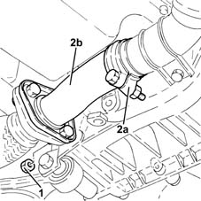

1076B18 rigid section of exhaust pipe between catalytic converter and silencer - r + r
- Path
- Procedures > 10 ENGINE > 1076 EXHAUST PIPES AND SILENCERS > 1076B exhaust pipes and silencers > 1076B18 rigid section of exhaust pipe between catalytic converter and silencer - r + r
- Kind
- repair procedure (removal / refitting; the operation number is the code)
- Applies to
- engines: 1.3 JTD; all production periods
- Interactive page
- https://sloeber94.github.io/elrnDB-lYpsln/en/#/2429060
Applies to: engines: 1.3 JTD; all production periods
 Removing
Removing
 Refitting
RefittingPosition the vehicle on the ramp.
Proceed with removal .
1. Tighten the nuts fastening the rigid section of the exhaust pipe between the catalytic converter and the silencer, silencer side.
Release the rigid pipe for the exhaust pipe between the catalytic converter and silencer from the silencer.
2. Loosen the collar (2a) and remove the rigid pipe for the exhaust pipe between the catalytic converter and the silencer (2b).

Applies to: engines: 1.3 JTD; all production periods
Refitting
RemovingRefit the rigid exhaust pipe section between the catalytic converter and the silencer and secure it using the collar.
Tighten the nuts fastening the rigid section of the exhaust pipe between the catalytic converter and the silencer, silencer side.
Proceed with refitting .
Remove the car from the ramps.